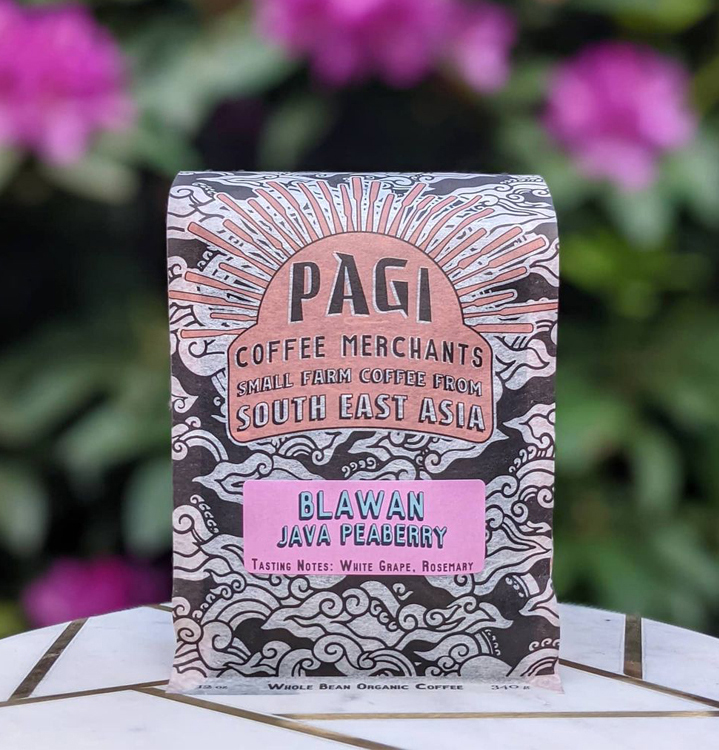

Pagi Coffee
Merchants
Specialty coffee roastery focused on sourcing extraordinary southeast Asian coffee
Every batch is sourced from small farms who take pride in their work, their coffee beans, and the unique flavors that they hold.
We work closely with the Consulate General of Indonesia to guarantee that we are importing coffee that protects Indonesia’s natural resources and while buying directly from and compensating farmers fairly.
